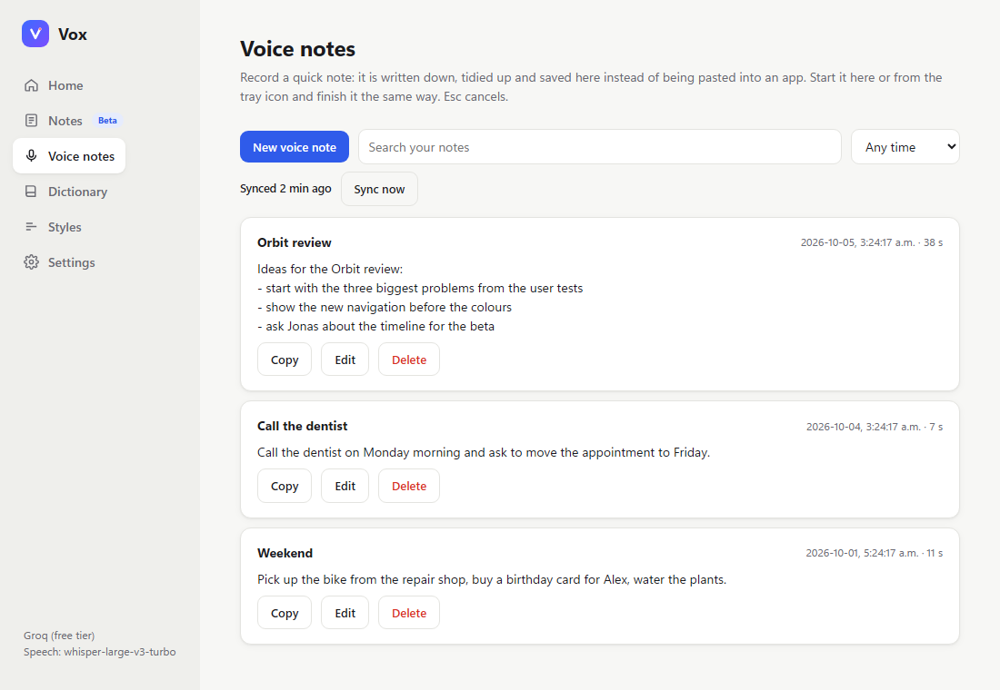
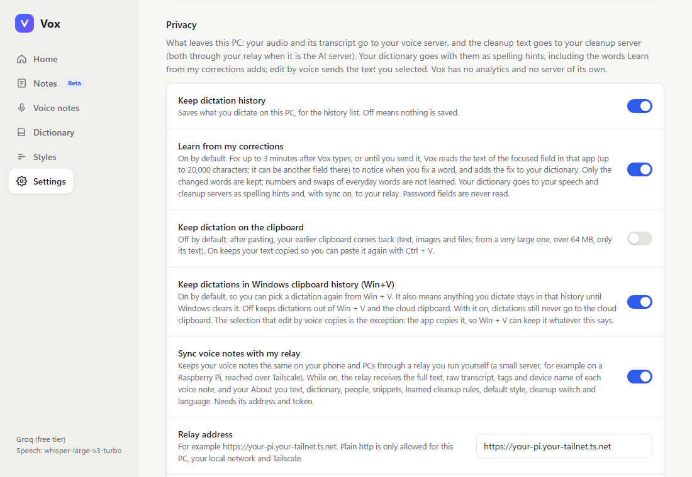
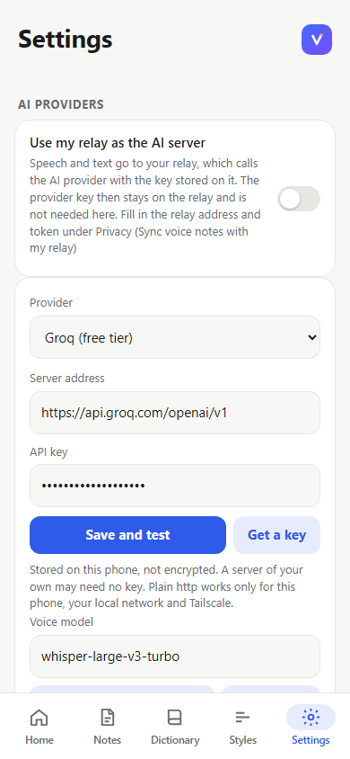
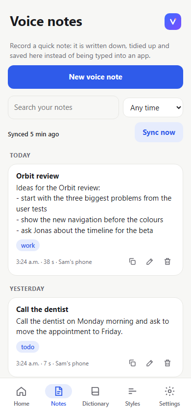

Free voice dictation for Windows and Android
Hold a shortcut on Windows, or tap the bubble on Android, speak, and the words you said are typed into the app you are in: email, chat, documents, code editors, browsers. Vox has no server and no account of its own. It uses a speech and cleanup provider that you choose, with your own key, or a server you run yourself.
Download for WindowsVoxSetup.exe, no administrator rights Download for AndroidVox.apk, installed from the fileBoth files are on the latest release page. The Windows installer is not code-signed and the APK is not from Google Play, so both show a warning the first time; the install steps explain each one. You need a key from a speech and cleanup provider (Groq has a free tier) or a server of your own.

Honest status. The newest work in 2.0 is checked by automated tests and CI builds, not yet on every real device. The Android note mode and the bubble fixes have not been run on a phone yet, and keep listening has not run with a real microphone. The open checks are the issues with the device-test label; test reports are welcome. The full list is in known issues and roadmap.
What is new in 2.0
2.0.0 is the first release with all of the v2 work. The full list is in the release notes and the changelog.
- Pick any OpenAI-compatible provider, with separate speech and cleanup servers and a key for each; a model list and a Test button in Settings.
- Cleanup keeps your words: if the cleaned text lost words, Vox types your words as spoken instead.
- Spoken lists become numbered or bulleted lists, on both apps.
- Code mode on Windows: "camel case user name" types
userName. - Snippets: say "my email" and Vox types the text you saved for it.
- New Windows shortcuts: tap or hold, a hands-free shortcut, paste and copy last dictation.
- Keep listening on Windows for up to 60 minutes, saved as one note or typed piece by piece.
- Voice notes on both apps, saved to a searchable list.
- Learn from my corrections: a word you fix in text Vox just typed goes into your dictionary.
- Android: a note bubble, a notification and a Quick Settings tile for notes, a bubble that stays up, diagnostics and an Install help card.
- An optional relay you run yourself, now also as standalone programs for Windows and Linux (including a Raspberry Pi 5 with a 64-bit system).
- Open-source documentation, CI on every pull request and the MIT licence, added in this release cycle.
Features
Dictation that keeps your words
The cleanup model is told to copy what you said and fix only punctuation, capitals, spelling and paragraphs. A check compares its answer with what you said; if words were lost, your words are typed as spoken. Light keeps fillers, Standard removes them.
Your provider and key, or a local server
Presets for Groq (free tier), OpenAI, OpenRouter, Together AI, Mistral, Ollama, LM Studio and a Speaches or faster-whisper server, or any OpenAI-compatible address. Speech and cleanup can use different servers and keys.
Lists and code mode
Say "first ... second ..." or "bullet point ..." and you get a list. In code editors and terminals on Windows, spoken formatters and symbols become code, and what you say there is not sent to the AI cleanup unless you choose it.
Snippets
Say a phrase such as "my signature" and Vox types the text you saved for it. The saved text is added after the cleanup, so it never goes to the cleanup server.
Hotkeys and keep listening
Hold Ctrl + Win to talk on Windows, or tap to start hands-free if you choose it. Double-tap to keep listening for up to 60 minutes. Esc cancels; Shift + Alt + Z pastes your last dictation again.
Voice notes
Record a note that is written down, tidied and saved to a searchable list instead of being typed. On Windows from the window, the tray or Ctrl + Alt + N.
Learn from corrections
Fix a word in the text Vox just typed, within 3 minutes, and the fix goes into your dictionary with a message saying so. Recently learned fixes can be undone. A switch in Settings, Privacy turns it off.
Android bubble and notes
A floating mic bubble types through Android's accessibility service, with a watchdog and a diagnostics card. Notes start from a note bubble, a notification or a Quick Settings tile.
Optional relay
A small server you run yourself syncs voice notes and your profile between PC and phone, and can hold your AI key so the phone never sees it. It comes as one Python file or as standalone programs for Windows and Linux, including a Raspberry Pi.
Privacy
No Vox server, no analytics, no accounts. Audio and text go only to the servers you chose. Settings, history and notes stay on your device. Speed timings are never sent.
How it works
Install and add a provider
Install Vox, pick a provider in Settings and paste your key, or point it at your own server.
Speak
Hold the shortcut on Windows or tap the bubble on Android, and speak in any app.
Your words appear
Vox turns the audio into text, tidies it without dropping words, and types it where your cursor is.
Screenshots
Rendered from the app's own pages with sample data, not photos of a device; the recording pill and notification parts are not shown. Select an image to see it full size.











Privacy in short
- No Vox server, no analytics and no accounts. Nothing is sent to the developers.
- Your audio goes to the speech server you chose. The text, your About you text, dictionary, people and the name of the app you type in go to the cleanup server you chose.
- The relay gets data only if you switch it on. API keys go there only if you turn on a separate switch, which is off by default.
- Learn from my corrections is on by default: for up to 3 minutes after Vox types, it reads the text of that field to notice your fixes (never password fields). You can turn it off in Settings, Privacy.
- On Windows, settings, history and notes are plain files in your profile and the API keys are protected by your Windows login. On Android, keys and history are in the app's private storage, unencrypted.
This page loads nothing from other sites: no fonts, scripts or trackers. The full details are in the privacy policy.
Documentation and project
- README: features, install, status and known limits
- Documentation: how Vox is built, every setting, security and privacy
- Changelog
- All releases
- Issues: bug reports and ideas
- Roadmap (issue #34)
- Device tests to run (the device-test label)
- Contributing and security reports
- Relay set-up guide
Licence and credits
Vox is released under the MIT licence. The licence was added in the 2.0 release cycle; before it the repository had none.
- Muhammad Minhajuddin (minhajuddinm), the original author of Vox.
- Yuvi-5, the v2 work.
- GreedyC, the number-format test rows.